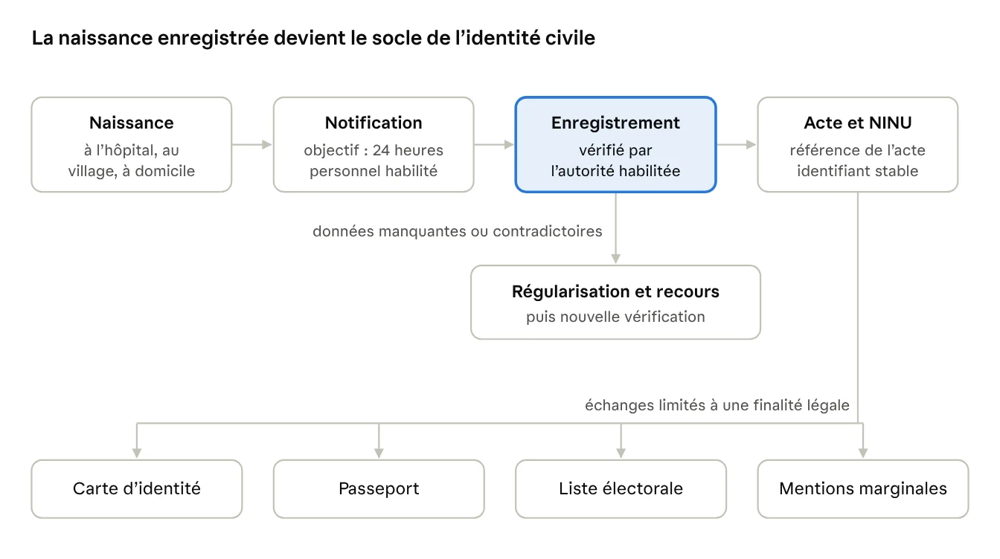
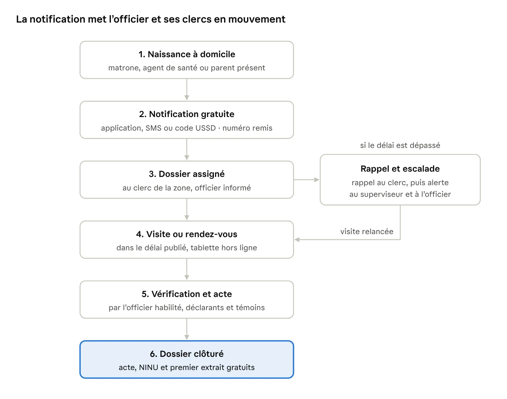
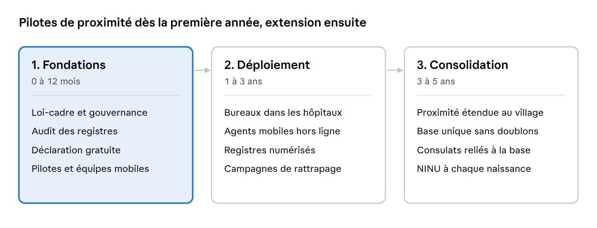
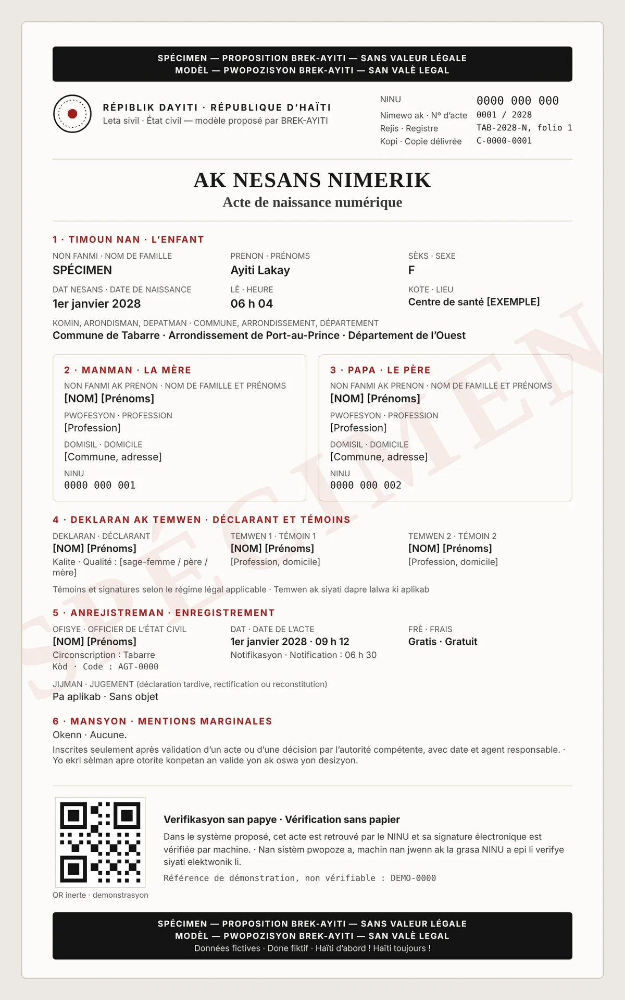

RÉFORMES ET PROPOSITIONS · 15 NOVEMBRE 2026
La réforme de l'État civil en Ayiti
Perspectives de BREK-AYITI : une identité et des droits effectifs, dès la naissance et jusqu'au village
Par la rédaction de BREK-AYITI — 15 novembre 2026
Un peuple qui ne sait pas qui il est ne peut ni voter librement, ni posséder sa terre, ni voyager dans la dignité. BREK-AYITI propose de faire de la réforme de l'État civil le premier chantier de la refondation de l'État.
Pourquoi l'État civil d'abord
Tout commence par l'enregistrement de la naissance. Sans preuve de son identité civile, un enfant risque de rencontrer des obstacles à l'école, aux services publics et, plus tard, pour obtenir ses documents. Ses droits existent : c'est à l'État de lui permettre de les exercer.
Une technologie de pointe ne corrige pas, à elle seule, une identité mal établie. La fiabilité du passeport commence en amont, dans les registres. Mais l'accès aux autres pays dépend aussi de leurs politiques de visas, des relations diplomatiques et de leurs règles d'entrée : un passeport sûr ne garantit pas, à lui seul, l'exemption de visa.
L'État civil est aussi la base des listes électorales, du cadastre, de la fiscalité et de la protection sociale. Il touche donc la souveraineté, la sécurité, la démocratie et la dignité de chaque citoyen.
Pour BREK-AYITI, la réforme de l'État civil n'est pas une question administrative. C'est un acte révolutionnaire : rendre à chaque Ayitien son existence légale.
État des lieux : des progrès réels sur une base encore fragile
Haïti a modernisé la carte d'identité avant d'avoir assaini l'acte de naissance. Le sommet de la chaîne avance ; sa base reste fragile.
Ce qui a progressé
Une carte biométrique annoncée. Selon HaitiLibre, dans son compte rendu du 19 octobre 2025, l'ONI a présenté aux diplomates une carte en polycarbonate, valable dix ans, avec puce, code QR et plusieurs dispositifs de sécurité. Les caractéristiques annoncées doivent être distinguées de celles dont le fonctionnement et le déploiement ont été vérifiés indépendamment. [5]
Le NINU au centre. En décembre 2025, le directeur général de l'ONI, Reynold Guerrier, a présenté une réforme fondée sur le numéro d'identification nationale unique et cité la transmission tardive des registres comme l'un des premiers problèmes à résoudre. Cette réforme est annoncée ; elle n'est pas décrite comme pleinement opérationnelle. [3]
Le passeport rattaché au NINU. Selon un avis de la DIE daté du 6 janvier 2026, rapporté par la presse, le NINU remplace le NIF dans le logiciel de personnalisation des passeports. [4]
Un appui extérieur. Le 18 août 2026, l'OEA et le Japon ont signé un accord de 3 millions de dollars pour l'accès à l'identification : 350 000 cartes vierges, des unités mobiles d'enregistrement et l'accès aux services publics. La phase précédente aurait porté à environ 5,8 millions le nombre d'Haïtiens disposant d'une carte valide. [6]
Ce qui reste fragile
Des enfants non enregistrés. Le tableau de bord UNICEF consulté le 15 novembre 2026 indique que 85 % des enfants de moins de cinq ans étaient enregistrés auprès d'une autorité d'état civil, d'après des données de 2017. Les 15 % restants ne l'étaient pas. Ce chiffre ne mesure ni la possession actuelle d'un acte, ni la couverture de toute la population. Aucune observation nationale plus récente n'a été retrouvée. [1]
La distance et le coût. L'AFD décrit des bureaux d'état civil à plusieurs heures de marche et des frais jugés inutiles par des familles pauvres. Il faut distinguer trois situations : naissance jamais enregistrée, acte perdu, absence de pièce d'identité. [2]
Des responsabilités à relier. L'officier d'état civil dresse les actes dans le cadre de ses compétences. Les Archives nationales conservent les registres, notamment leurs doubles, et assurent des recherches et la délivrance d'extraits. Les missions consulaires peuvent produire certains actes. L'ONI intervient dans l'identification nationale et la DIE dans le passeport. La réforme doit fiabiliser leurs échanges sans effacer leurs responsabilités. [7]
Les déplacements. La violence a déplacé de nombreuses familles. Déplacement, perte de documents et destruction de registres sont des situations différentes ; faute de source spécifique, nous ne chiffrons pas les pertes documentaires.
Les voies de régularisation. Les déclarations tardives et les reconstitutions sont indispensables aux personnes privées de documents. Elles doivent être accessibles et contrôlées selon la procédure légale. Une démarche tardive n'est pas, en elle-même, une fraude ; les contrôles doivent viser les abus.
Le constat de BREK-AYITI : une carte moderne ne vaut que l'acte de naissance qui la fonde.
Le mécanisme proposé : l'enregistrement, socle de l'identité civile
BREK-AYITI propose que l'enregistrement de la naissance constitue le socle de l'identité civile et soit relié à un identifiant individuel stable. Les actes ultérieurs y seraient rattachés par des échanges sécurisés, et chaque administration garderait la responsabilité de vérifier les conditions légales de son service.

Mécanisme proposé · la chaîne unique de l'identité
Nous proposons de viser une notification de la naissance dans les 24 heures, notamment par les établissements de santé et les personnels habilités. L'établissement de l'acte et l'attribution de l'identifiant suivent une procédure légalement définie ; le délai légal et les déclarants habilités restent à vérifier dans les textes en vigueur. Un retard ne doit jamais priver l'enfant de son droit à l'enregistrement.
L'acte de naissance ne prouve pas à lui seul la nationalité, une filiation établie plus tard ou l'éligibilité électorale : chaque service vérifie ses propres conditions. Les échanges sont limités à une finalité légale, sans accès général à toutes les données d'une personne.
Les principes de BREK-AYITI
Cinq principes guident notre proposition.
Une personne, une identité, à vie. Un seul identifiant, le NINU, attribué dès la naissance et relié à tous les actes de la vie : naissance, mariage, décès, carte, passeport, électeur.
La gratuité et la proximité. Déclarer une naissance doit être gratuit et possible près de chez soi, à l'hôpital, à la mairie ou au village. Aucun enfant ne doit rester invisible parce que ses parents sont pauvres ou loin d'un bureau.
L'intégrité avant la technologie. Le meilleur logiciel ne protège pas contre un officier corrompu. Vetting du personnel, traçabilité de chaque acte et sanctions pénales pour la fraude interne.
La souveraineté des données. Les registres, la base biométrique et les clés cryptographiques appartiennent à l'État haïtien, hébergés et sauvegardés sous son contrôle, jamais sous celui d'un fournisseur ou d'un bailleur.
La transparence. Contrats publiés, statistiques d'enregistrement publiées chaque année par commune, audits indépendants. Le peuple doit pouvoir mesurer les progrès.
Nos propositions en six axes
Axe 1 — Une loi-cadre et une gouvernance coordonnée
Une loi sur l'État civil et l'identification qui précise qui enregistre, conserve, rectifie, identifie et contrôle : officiers d'état civil, ONI, Archives nationales, consulats et autorités judiciaires.
Une gouvernance nationale coordonnée de l'identité. Tout rapprochement institutionnel préserve la conservation des registres, les compétences judiciaires, les contrôles indépendants et les voies de recours.
Une loi sur la protection des données personnelles et biométriques.
Axe 2 — Enregistrer chaque naissance
Un bureau d'état civil dans chaque hôpital et centre de santé qui pratique des accouchements.
Des agents itinérants pour les sections reculées, équipés de tablettes qui fonctionnent hors ligne.
La déclaration et le premier extrait gratuits, avec attribution du NINU à la naissance.
Les matrones et sages-femmes formées pour signaler les naissances à domicile.
Axe 3 — Rattraper les invisibles
Des campagnes nationales de déclaration tardive, gratuites, dans les écoles, les marchés, les sites de déplacés et les consulats.
Une procédure contrôlée : recherche administrative, témoins, recoupement avec les registres existants, et intervention du juge chaque fois que la loi l'exige.
Une priorité aux enfants, aux déplacés et aux personnes âgées.
Axe 4 — Numériser et sécuriser la mémoire
La numérisation de tous les registres existants, aux Archives et dans les communes.
Une base nationale unique, sauvegardée en double sur le territoire et une copie de secours hors des zones à risque.
La détection automatique des doublons et des identités multiples.
La transmission immédiate de chaque acte, pour mettre fin au retard des registres.
Axe 5 — Protéger contre la fraude
Vetting et rotation du personnel des services d'identité.
Traçabilité : chaque acte porte l'identité de l'agent qui l'a créé ou modifié.
Paiement des frais éventuels par banque, mobile ou réseau agréé, jamais en espèces remises à l'agent instructeur.
Des sanctions disciplinaires et pénales proportionnées aux faits établis, sans confondre fraude intentionnelle, erreur matérielle et défaillance du service. Toute nouvelle qualification pénale doit être définie par la loi.
Axe 6 — Servir la diaspora
Des services d'État civil dans les consulats, reliés à la base nationale.
La transcription en ligne des naissances et mariages survenus à l'étranger.
Des tournées consulaires dans les grandes communautés.
Les naissances à domicile : notifier pour déclencher le déplacement
Beaucoup d'enfants naissent à la maison, loin d'un bureau d'état civil. BREK-AYITI propose qu'une simple notification de la naissance mette l'officier d'état civil et ses clercs en mouvement : c'est l'État qui se déplace vers la famille, et non la famille qui doit trouver l'État.

Qui notifie et comment
- La matrone, l'agent de santé communautaire ou un parent présent à la naissance.
- Par une application qui fonctionne hors ligne pour les matrones et agents, et par SMS ou code USSD depuis n'importe quel téléphone, en créole d'abord, avec un message vocal pour qui ne lit pas.
- La notification est gratuite. Elle contient le minimum : date, heure et lieu de la naissance, sexe de l'enfant, NINU de la mère et du père s'il est présent, et l'identité de la personne qui notifie. La famille reçoit un numéro de suivi.
Ce que la notification déclenche
- Le dossier est assigné automatiquement au clerc qui couvre la zone, et l'officier d'état civil en est informé.
- Le clerc se déplace ou fixe un rendez-vous proche, dans un délai publié à l'avance, avec une tablette qui fonctionne hors ligne.
- L'officier habilité vérifie les informations, entend les déclarants et les témoins requis, puis établit l'acte. Le NINU et le premier extrait sont remis gratuitement, et le dossier est clôturé.
- Si le délai est dépassé, le système relance le clerc, puis alerte le superviseur et l'officier. Aucune notification ne reste sans suite.
Les garde-fous
- Une notification n'est pas un acte : elle ne crée aucun droit tant que l'officier n'a pas vérifié et établi l'acte selon la loi.
- Chaque personne qui notifie est identifiée et ses notifications sont tracées, pour décourager les fausses déclarations.
- Les données sont réduites au minimum, chiffrées et réservées à l'état civil.
- La même notification peut programmer les premiers vaccins, en lien avec les services de santé.
Ce que l'on mesure : le délai moyen entre la notification et l'acte, la part des notifications transformées en actes, et les dossiers en retard par zone, publiés chaque trimestre.
Informer et former la population par la radio et la télévision
Un nouveau système ne fonctionne que si la population le comprend. BREK-AYITI propose de s'appuyer sur la radio et la télévision pour sensibiliser et former la population, en créole d'abord. L'objectif est que chaque famille comprenne le nouvel État civil et sache s'en servir.
Ce que chacun doit comprendre
- Pourquoi l'acte de naissance est la base de l'identité : il ouvre la voie au NINU, à la carte d'identité, au passeport, à l'école et à l'héritage.
- Comment notifier une naissance à domicile et suivre son dossier.
- Ce qui est gratuit, et pourquoi aucun intermédiaire n'est nécessaire.
- Qu'une notification n'est pas un acte : c'est l'officier d'état civil qui établit l'acte.
- Où signaler un retard, un refus ou une demande d'argent.
Comment former
- Expliquer simplement, en créole, avec des exemples tirés de la vie réelle.
- Montrer les démarches pas à pas, surtout à la télévision.
- Répondre en direct aux questions de la population.
- Répéter les mêmes messages sur les médias nationaux et sur les radios communautaires, qui atteignent les sections communales et les personnes qui ne lisent pas.
Former d'abord ceux qui accompagnent les familles
Les matrones, les agents de santé communautaires, les CASEC et ASEC, les responsables religieux et les directeurs d'école sont formés avant le grand public. Ils pourront ainsi expliquer le système, aider les familles à notifier et repérer les abus.
Vérifier que le message passe
On suivra le nombre de notifications et d'appels reçus après les émissions, ainsi que l'évolution de l'enregistrement des naissances dans chaque commune. Ces chiffres permettront d'ajuster les explications là où la population comprend moins bien.
L'État civil dans le Système décentralisé mixte
Le SDM, publié par BREK le 14 septembre 2018, donne déjà la structure territoriale de cette réforme. Il propose trois régions dirigées par des préfets, dix mairies de chefs-lieux qui reprennent les services départementaux, 35 maires d'arrondissement, 90 administrateurs communaux, et des villages formés par le regroupement de sections communales. [8]
Voici comment BREK-AYITI propose d'y ancrer l'État civil. Cette articulation est une proposition d'aujourd'hui, pas un ajout au texte de 2018.
| Niveau du SDM | Rôle pour l'État civil |
|---|---|
| Village (administrateur de village) | Guichet de proximité : déclaration des naissances et décès, transmission numérique immédiate |
| Commune et arrondissement (administrateur communal, maire) | Bureau d'état civil : rédaction des actes, mariages, délivrance des extraits |
| Chef-lieu de département (mairie) | Centre de traitement : contrôle qualité, déclarations tardives, capture biométrique pour la carte et le passeport |
| Région (préfet) | Supervision, inspection, lutte contre la fraude |
| National (autorité unique de l'identité) | Base nationale, NINU, normes, sécurité des données, lien avec l'Immigration et le CEP |
Les collectivités assureraient la proximité du service ; seuls les agents légalement habilités établiraient les actes et prendraient les décisions relevant de leurs compétences. Un préfet, un maire ou un administrateur de village ne devient pas automatiquement officier d'état civil. Il faut aussi distinguer supervision administrative, contrôle de légalité, rectification judiciaire et enquête pénale.
Les nombres cités sont ceux du projet historique de 2018, pas un décompte territorial actuel. Le déploiement commencerait dans les structures existantes, sans attendre la réalisation complète de la réorganisation territoriale.
Calendrier et priorités
Dès la première année, nous proposons l'audit des registres, la préparation du cadre légal et des services pilotes de proximité avec des équipes mobiles.

Feuille de route de la réforme · 3 phases sur 5 ans
L'extension serait progressive, selon les ressources, la sécurité et les résultats évalués. Le calendrier de cinq ans est un objectif de programmation, pas une garantie de couverture sans financement.
Exister, c'est le premier droit
BREK-AYITI reconnaît les efforts récents : carte biométrique, NINU, passeport rattaché à l'identifiant unique. Mais ces progrès restent bâtis sur un sol mouvant tant que chaque naissance n'est pas enregistrée, gratuitement, près de chez soi, sans fraude.
Nous demandons aux autorités :
de publier les chiffres actuels de l'enregistrement des naissances, commune par commune ;
de publier les contrats liés à la carte, au passeport et aux bases de données ;
d'ouvrir un débat national sur une loi-cadre de l'État civil et de l'identification.
Nous demandons à chaque candidat à la présidence : comment garantirez-vous que chaque enfant né en Ayiti existe légalement dès son premier jour ?
Un passeport respecté dans le monde commence par un acte de naissance respecté dans la plus petite section communale.
Haïti d'abord ! Haïti toujours !
— La rédaction de BREK-AYITI, Brigadiers de la Révolution Classique
Annexe : spécimen de l'acte de naissance numérique
Ce modèle illustre une proposition de réforme. Il ne constitue ni un acte officiel ni un modèle juridiquement homologué. Les données, identifiants et références de signature sont fictifs, et le code QR est inerte : il ne permet aucune vérification d'identité réelle. Les champs s'inspirent des mentions prévues par l'article 56 du Code civil haïtien ; la liste définitive doit être vérifiée sur le droit haïtien consolidé.
Les mentions marginales seraient inscrites après réception et validation des actes ou décisions correspondants par l'autorité compétente. Chaque inscription serait datée, attribuée et conservée dans un historique sécurisé.

Sources
UNICEF, tableau de bord ODD Haïti, indicateur 16.9.1 (données 2017), consulté le 15 novembre 2026 — data.unicef.org
AFD, 16 septembre 2024, « Exister officiellement sans papiers en Haïti » — afd.fr
Le Nouvelliste, 12 décembre 2025, « Réforme de l'état civil : l'ONI mise sur le NINU » — lenouvelliste.com
IciHaiti, 10 janvier 2026, « Passeport : Haïti passe du NIF au NINU » — icihaiti.com
HaitiLibre, 19 octobre 2025, mesures de sécurité de la carte d'identification nationale biométrique — haitilibre.com
Caribbean National Weekly, 19 août 2026, accord OEA–Japon de 3 millions de dollars pour l'identification — caribbeannationalweekly.com ; voir aussi Le Nouvelliste
Portail des services publics d'Haïti, Archives nationales d'Haïti — servicespublics.gouv.ht
BREK, « Système décentralisé mixte », 14 septembre 2018 — brek-ayiti.pages.dev/#sdm